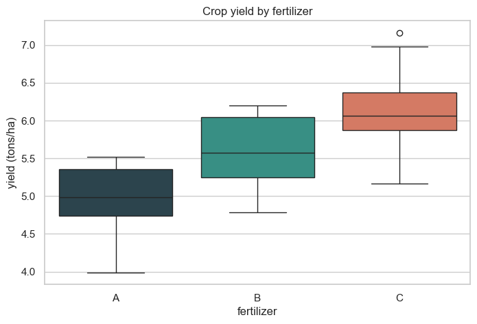
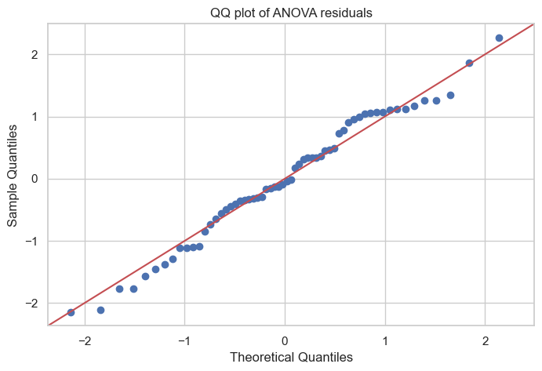
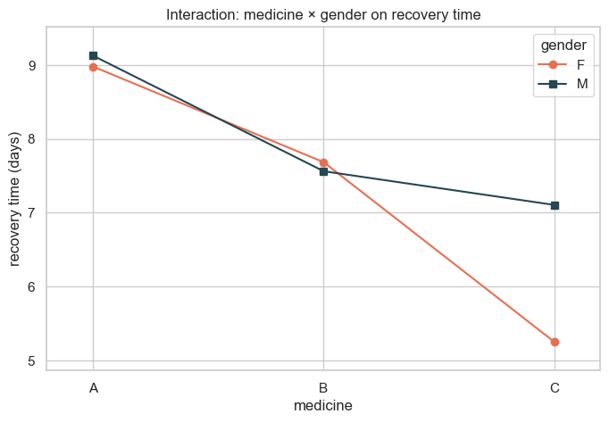
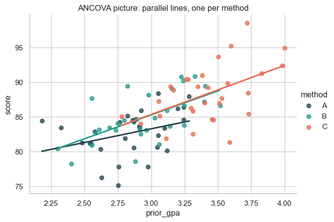

ANOVA, ANCOVA & MANOVA — Comparing Group Means at Scale¶
Data 200 · Applied Statistical Analysis · Instructor: Aayush Regmi
In the Statistics Foundations notebook we used a t-test to ask: do these two groups have different means? That works beautifully when there are exactly two groups. The moment a third group joins the party, the t-test starts to creak.
This notebook walks the natural progression:
t-test → one-way ANOVA → two-way ANOVA → ANCOVA → MANOVA.
Along the way we'll see one of the most useful identities in applied
statistics: ANOVA is just OLS regression with categorical inputs.
The same (X^T X)^{-1} X^T y machinery from the
Linear Regression notebook is doing the work.
Learning Objectives¶
By the end of this notebook you should be able to:
- Recall what a two-sample t-test does and why it breaks down for three or more groups (the multiple-comparisons problem).
- Run a one-way ANOVA by hand using the SST = SSB + SSW decomposition, and interpret the F-statistic.
- See that ANOVA is OLS regression with dummy-coded categorical variables — same algorithm, different names.
- State the assumptions of ANOVA and check them in code.
- Extend to two-way ANOVA with two factors and an interaction effect.
- Use ANCOVA when a continuous covariate (like prior GPA) muddies the comparison.
- Recognise when a MANOVA (multiple dependent variables) is appropriate — at a conceptual level.
Setup¶
import numpy as np
import pandas as pd
import matplotlib.pyplot as plt
import seaborn as sns
from scipy import stats
import statsmodels.api as sm
from statsmodels.formula.api import ols
from statsmodels.stats.anova import anova_lm
from statsmodels.graphics.factorplots import interaction_plot
from statsmodels.multivariate.manova import MANOVA
sns.set_theme(style="whitegrid")
plt.rcParams["figure.figsize"] = (8, 5)
rng = np.random.default_rng(42)
1. From t-Tests to ANOVA¶
Quick recap: the two-sample t-test¶
Suppose two classrooms write the same exam. Are their average scores really different, or did the gap appear by chance? An independent samples t-test answers exactly that.
class_a = rng.normal(loc=72, scale=8, size=30) # mean ≈ 72
class_b = rng.normal(loc=78, scale=8, size=30) # mean ≈ 78
t_stat, p_val = stats.ttest_ind(class_a, class_b)
print(f"Class A mean: {class_a.mean():.2f}")
print(f"Class B mean: {class_b.mean():.2f}")
print(f"t = {t_stat:.3f}, p = {p_val:.4f}")
Class A mean: 72.13
Class B mean: 78.91
t = -4.148, p = 0.0001
Small p → the means are statistically distinguishable. So far so good.
The problem: what if there are three classes?¶
A natural reflex is to run all pairwise t-tests — A vs B, A vs C, B vs C. With one t-test at \(\alpha = 0.05\), the chance of a false alarm is 5%. With three independent tests, the chance that at least one of them is a false alarm is
With six pairwise tests (four groups), it climbs to 26%. This is the multiple-comparisons problem: the more tests we run, the more false discoveries we expect just by luck.
# Show the family-wise error rate exploding as we add comparisons
alpha = 0.05
for k in [1, 2, 3, 6, 10]:
fwer = 1 - (1 - alpha) ** k
print(f"{k:>2} independent tests at alpha=0.05 → family-wise error ≈ {fwer:.1%}")
1 independent tests at alpha=0.05 → family-wise error ≈ 5.0%
2 independent tests at alpha=0.05 → family-wise error ≈ 9.8%
3 independent tests at alpha=0.05 → family-wise error ≈ 14.3%
6 independent tests at alpha=0.05 → family-wise error ≈ 26.5%
10 independent tests at alpha=0.05 → family-wise error ≈ 40.1%
We need one test that compares all groups simultaneously, with the false-positive rate held at 5% overall. That test is ANOVA (Analysis of Variance).
2. Where ANOVA Shows Up in the Real World¶
ANOVA is the right tool whenever you want to compare a numeric outcome across three or more groups. A few familiar scenes:
- The farmer. A farmer tries three fertilizers — A, B, and C — on similar plots of land and measures the crop yield from each plot. Does fertilizer choice change average yield, or are the differences just luck?
- The doctor. A clinical trial gives three different medicines to groups of patients with the same illness and records recovery time in days. Do the medicines actually differ, or could the same gap appear from random patient variation?
- The educator. A school tests four teaching methods on different classrooms and looks at end-of-term test scores. Is one method reliably better, or just lucky this term?
Every one of these problems has the same shape: one numeric outcome, one categorical "group" variable with several levels. That is exactly what one-way ANOVA was designed for.
3. One-Way ANOVA — Intuition and Math¶
The core idea: split the variation¶
Take all the yield numbers from the farmer's experiment and forget for a moment which fertilizer they came from. There is some total variation in those numbers. ANOVA splits that total variation into two parts:
- Between-group variation (SSB) — how far each group's mean is from the overall mean. This is the signal — variation that the group label seems to explain.
- Within-group variation (SSW) — how far individual observations are from their own group's mean. This is the noise — variation that has nothing to do with which group you're in.
If the signal is large compared to the noise, the groups really are different. ANOVA puts that ratio into a single number — the F-statistic:
where \(k\) is the number of groups and \(n\) is the total sample size. Big \(F\) → real differences; small \(F\) → just noise.
The fertilizer experiment (synthetic)¶
Three fertilizers, 20 plots each. Yields are in tons per hectare.
n_per_group = 20
fert_a = rng.normal(loc=5.0, scale=0.6, size=n_per_group) # baseline
fert_b = rng.normal(loc=5.8, scale=0.6, size=n_per_group) # a bit better
fert_c = rng.normal(loc=6.2, scale=0.6, size=n_per_group) # best
fert = pd.DataFrame({
"yield": np.concatenate([fert_a, fert_b, fert_c]),
"fertilizer": np.repeat(["A", "B", "C"], n_per_group),
})
fert.head()
| yield | fertilizer | |
|---|---|---|
| 0 | 3.990278 | A |
| 1 | 4.799069 | A |
| 2 | 5.097652 | A |
| 3 | 5.351733 | A |
| 4 | 5.426736 | A |
sns.boxplot(data=fert, x="fertilizer", y="yield",
palette=["#264653", "#2a9d8f", "#e76f51"])
plt.title("Crop yield by fertilizer")
plt.ylabel("yield (tons/ha)"); plt.show()
/var/folders/kp/mytrwq8157q9s1tmw7r79fkm0000gn/T/ipykernel_17973/561516898.py:1: FutureWarning:
Passing `palette` without assigning `hue` is deprecated and will be removed in v0.14.0. Assign the `x` variable to `hue` and set `legend=False` for the same effect.
sns.boxplot(data=fert, x="fertilizer", y="yield",

Quick-and-dirty ANOVA — scipy.stats.f_oneway¶
f_stat, p_val = stats.f_oneway(fert_a, fert_b, fert_c)
print(f"F-statistic : {f_stat:.3f}")
print(f"p-value : {p_val:.4g}")
F-statistic : 32.859
p-value : 3.226e-10
A large F and a tiny p — fertilizer choice does explain variation in yield. But the bare numbers don't show how ANOVA arrived at this answer. Let's compute the same F by hand from the SSB / SSW formulas.
grand_mean = fert["yield"].mean()
k = fert["fertilizer"].nunique()
n = len(fert)
group_means = fert.groupby("fertilizer")["yield"].mean()
group_sizes = fert.groupby("fertilizer")["yield"].size()
# Between-group sum of squares
ssb = (group_sizes * (group_means - grand_mean) ** 2).sum()
# Within-group sum of squares
ssw = ((fert["yield"] - fert.groupby("fertilizer")["yield"].transform("mean")) ** 2).sum()
sst = ((fert["yield"] - grand_mean) ** 2).sum()
f_manual = (ssb / (k - 1)) / (ssw / (n - k))
print(f"SSB (between groups): {ssb:.3f}")
print(f"SSW (within groups) : {ssw:.3f}")
print(f"SST (total) : {sst:.3f}")
print(f"Sanity check: SSB + SSW = {ssb + ssw:.3f} (should equal SST)")
print(f"\nManual F-statistic : {f_manual:.3f} (matches scipy)")
SSB (between groups): 14.172
SSW (within groups) : 12.292
SST (total) : 26.465
Sanity check: SSB + SSW = 26.465 (should equal SST)
Manual F-statistic : 32.859 (matches scipy)
4. ANOVA Is OLS Regression¶
Here's the punchline that often surprises students:
One-way ANOVA is exactly an OLS regression with the categorical group encoded as dummy variables.
In the Linear Regression notebook OLS estimated \((\beta_0, \beta_1, \ldots)\) for continuous predictors. With a categorical predictor, the same OLS estimates the mean of each group. Same machine, different inputs.
Let's see it. statsmodels' ols with the formula
yield ~ C(fertilizer) automatically dummy-encodes fertilizer and
fits the regression.
model = ols("Q('yield') ~ C(fertilizer)", data=fert).fit()
print(model.summary().tables[1])
======================================================================================
coef std err t P>|t| [0.025 0.975]
--------------------------------------------------------------------------------------
Intercept 4.9442 0.104 47.614 0.000 4.736 5.152
C(fertilizer)[T.B] 0.6432 0.147 4.380 0.000 0.349 0.937
C(fertilizer)[T.C] 1.1891 0.147 8.098 0.000 0.895 1.483
======================================================================================
Read the coefficient table:
Intercept≈ mean of fertilizer A (the baseline).C(fertilizer)[T.B]= mean(B) − mean(A).C(fertilizer)[T.C]= mean(C) − mean(A).
Compare those numbers to the group means we computed earlier:
print("Group means:")
print(group_means)
print(f"\nFitted intercept (should equal mean A): {model.params['Intercept']:.3f}")
print(f"B - A from coefficient: {model.params['C(fertilizer)[T.B]']:.3f}")
print(f"B - A from means : {group_means['B'] - group_means['A']:.3f}")
Group means:
fertilizer
A 4.944217
B 5.587460
C 6.133362
Name: yield, dtype: float64
Fitted intercept (should equal mean A): 4.944
B - A from coefficient: 0.643
B - A from means : 0.643
The ANOVA table from the same OLS fit¶
anova_lm re-summarises the same fit as the classic ANOVA
decomposition (SSB, SSW, F, p):
anova_lm(model)
| df | sum_sq | mean_sq | F | PR(>F) | |
|---|---|---|---|---|---|
| C(fertilizer) | 2.0 | 14.172244 | 7.086122 | 32.858521 | 3.225851e-10 |
| Residual | 57.0 | 12.292366 | 0.215656 | NaN | NaN |
The F-statistic and p-value are identical to the ones from
scipy.stats.f_oneway and our hand calculation. ANOVA and OLS are
two readouts of the same underlying fit.
What the design matrix looks like¶
To make the dummy encoding visible, here are the first few rows of
the design matrix X that statsmodels actually solved
\(\hat\beta = (X^\top X)^{-1} X^\top y\) for:
X = pd.DataFrame(model.model.exog,
columns=model.model.exog_names)
X.assign(fertilizer=fert["fertilizer"].values).head(8)
| Intercept | C(fertilizer)[T.B] | C(fertilizer)[T.C] | fertilizer | |
|---|---|---|---|---|
| 0 | 1.0 | 0.0 | 0.0 | A |
| 1 | 1.0 | 0.0 | 0.0 | A |
| 2 | 1.0 | 0.0 | 0.0 | A |
| 3 | 1.0 | 0.0 | 0.0 | A |
| 4 | 1.0 | 0.0 | 0.0 | A |
| 5 | 1.0 | 0.0 | 0.0 | A |
| 6 | 1.0 | 0.0 | 0.0 | A |
| 7 | 1.0 | 0.0 | 0.0 | A |
Fertilizer A → both dummies are 0 → only the intercept fires → predicted yield = mean(A). Fertilizer B → dummy B is 1 → predicted yield = mean(A) + (mean(B) − mean(A)) = mean(B). And so on. The regression coefficients are the group means in disguise.
5. ANOVA Assumptions¶
Like every statistical test, ANOVA is built on assumptions. The p-value is only trustworthy if these hold:
- Independence — observations are unrelated. (Same plot measured twice would violate this; so would students copying answers.)
- Normality of residuals — the residuals from the fit should be approximately normally distributed.
- Homogeneity of variance ("homoscedasticity") — all groups should have similar spread.
Two quick code checks below.
# (a) Normality of residuals — Shapiro-Wilk
residuals = model.resid
shapiro_W, shapiro_p = stats.shapiro(residuals)
print(f"Shapiro-Wilk : W = {shapiro_W:.3f}, p = {shapiro_p:.3f} (large p → looks normal)")
# (b) Equal variances across groups — Levene's test
levene_W, levene_p = stats.levene(fert_a, fert_b, fert_c)
print(f"Levene : W = {levene_W:.3f}, p = {levene_p:.3f} (large p → variances look equal)")
Shapiro-Wilk : W = 0.979, p = 0.391 (large p → looks normal)
Levene : W = 0.046, p = 0.955 (large p → variances look equal)
# A QQ plot of residuals — points close to the line ⇒ approximately normal
sm.qqplot(residuals, line="45", fit=True)
plt.title("QQ plot of ANOVA residuals"); plt.show()

If assumptions are violated:
- Variances clearly unequal? Use Welch's ANOVA
(
scipy.stats.f_onewayhas a Welch variant viapingouin.welch_anova). - Residuals strongly non-normal? Try the non-parametric
Kruskal-Wallis test (
scipy.stats.kruskal).
6. Two-Way ANOVA — Two Factors at Once¶
One-way ANOVA had one grouping variable. Real experiments often vary two things at once. Two-way ANOVA lets us ask three questions from a single fit:
- Is there a main effect of factor A?
- Is there a main effect of factor B?
- Is there an interaction — does the effect of A depend on B?
Example: medicine × gender on recovery time¶
Three medicines, two genders. We synthesise data where medicine C works particularly well for one gender — i.e. there is an interaction.
n_each = 25
rows = []
# Mean recovery time (days) for each (medicine, gender) cell
cell_means = {
("A", "F"): 9.0, ("A", "M"): 9.2,
("B", "F"): 7.5, ("B", "M"): 7.7,
("C", "F"): 5.5, ("C", "M"): 7.0, # interaction lives here
}
for (med, gen), mu in cell_means.items():
rows.append(pd.DataFrame({
"recovery": rng.normal(loc=mu, scale=1.2, size=n_each),
"medicine": med,
"gender": gen,
}))
med = pd.concat(rows, ignore_index=True)
med.head()
| recovery | medicine | gender | |
|---|---|---|---|
| 0 | 7.771803 | A | F |
| 1 | 9.215131 | A | F |
| 2 | 9.263996 | A | F |
| 3 | 10.631025 | A | F |
| 4 | 10.002133 | A | F |
# Two-way ANOVA with interaction term
model2 = ols("recovery ~ C(medicine) + C(gender) + C(medicine):C(gender)",
data=med).fit()
anova_lm(model2, typ=2)
| sum_sq | df | F | PR(>F) | |
|---|---|---|---|---|
| C(medicine) | 206.911857 | 2.0 | 67.194064 | 2.439205e-21 |
| C(gender) | 14.727458 | 1.0 | 9.565404 | 2.381881e-03 |
| C(medicine):C(gender) | 28.758802 | 2.0 | 9.339343 | 1.535650e-04 |
| Residual | 221.710860 | 144.0 | NaN | NaN |
Read the table:
- C(medicine) — significant main effect: medicines differ on average.
- C(gender) — main effect of gender (small here).
- C(medicine):C(gender) — interaction: the gap between medicines is not the same for both genders. The interaction plot makes this visible.
fig, ax = plt.subplots(figsize=(8, 5))
interaction_plot(
x=med["medicine"], trace=med["gender"], response=med["recovery"],
colors=["#e76f51", "#264653"], markers=["o", "s"], ax=ax,
)
ax.set_ylabel("recovery time (days)")
ax.set_title("Interaction: medicine × gender on recovery time")
plt.show()

Non-parallel lines ⇒ interaction. Medicine C works dramatically better for one gender than the other.
A second two-way example: fertilizer × watering frequency¶
Two fertilizers, two watering schedules — does one combination beat the rest?
n_each = 18
rows = []
for (f, w), mu in {
("A", "daily"): 5.5, ("A", "weekly"): 5.0,
("B", "daily"): 6.4, ("B", "weekly"): 5.4,
}.items():
rows.append(pd.DataFrame({
"yield": rng.normal(loc=mu, scale=0.5, size=n_each),
"fertilizer": f,
"watering": w,
}))
farm = pd.concat(rows, ignore_index=True)
model_farm = ols("Q('yield') ~ C(fertilizer) + C(watering) + C(fertilizer):C(watering)",
data=farm).fit()
anova_lm(model_farm, typ=2)
| sum_sq | df | F | PR(>F) | |
|---|---|---|---|---|
| C(fertilizer) | 10.717942 | 1.0 | 42.867108 | 9.185158e-09 |
| C(watering) | 17.470879 | 1.0 | 69.875921 | 4.881116e-12 |
| C(fertilizer):C(watering) | 1.982103 | 1.0 | 7.927550 | 6.364605e-03 |
| Residual | 17.001847 | 68.0 | NaN | NaN |
Significant interaction ⇒ the best fertilizer depends on watering schedule. That is a finding pure one-way ANOVA could never have surfaced.
7. ANCOVA — When a Continuous Covariate Muddies the Picture¶
Why one-way ANOVA can mislead¶
Suppose we want to compare three teaching methods on end-of-term
test scores. We run a one-way ANOVA on score ~ C(method) and find
that the methods differ.
But there's a confounder: students assigned to different methods may have started with different prior GPAs. A method that happened to get the stronger students looks better than it really is.
ANCOVA (Analysis of Covariance) handles this by adding the covariate to the model:
The continuous covariate is "regressed out" of the score before group means are compared. We end up asking the cleaner question: holding prior GPA constant, do the methods differ?
Synthetic student dataset¶
We deliberately introduce a confound: method C tends to be assigned to students with higher prior GPA. So a naive one-way ANOVA will overstate how good method C is.
n_each = 30
data = []
method_effect = {"A": 0.0, "B": 1.0, "C": 1.5}
method_gpa = {"A": 2.8, "B": 3.0, "C": 3.4} # confounded with method
for m in ["A", "B", "C"]:
prior = rng.normal(loc=method_gpa[m], scale=0.3, size=n_each).clip(1, 4)
score = 60 + 8 * prior + method_effect[m] + rng.normal(scale=3, size=n_each)
data.append(pd.DataFrame({"score": score, "prior_gpa": prior, "method": m}))
students = pd.concat(data, ignore_index=True)
students.head()
| score | prior_gpa | method | |
|---|---|---|---|
| 0 | 85.143263 | 2.821610 | A |
| 1 | 85.918797 | 2.924167 | A |
| 2 | 87.941253 | 3.284863 | A |
| 3 | 84.431187 | 2.181029 | A |
| 4 | 80.365867 | 2.622669 | A |
Step 1 — Naive one-way ANOVA (ignoring prior GPA):
naive = ols("score ~ C(method)", data=students).fit()
print("Naive one-way ANOVA (no covariate):\n")
print(anova_lm(naive))
print("\nMethod-effect coefficients:")
print(naive.params)
Naive one-way ANOVA (no covariate):
df sum_sq mean_sq F PR(>F)
C(method) 2.0 478.315700 239.157850 18.393294 2.176639e-07
Residual 87.0 1131.213011 13.002448 NaN NaN
Method-effect coefficients:
Intercept 82.654636
C(method)[T.B] 2.261608
C(method)[T.C] 5.611834
dtype: float64
Step 2 — ANCOVA (adding prior GPA as a covariate):
ancova = ols("score ~ prior_gpa + C(method)", data=students).fit()
print("ANCOVA (covariate-adjusted):\n")
print(anova_lm(ancova, typ=2))
print("\nMethod-effect coefficients (controlling for prior GPA):")
print(ancova.params)
ANCOVA (covariate-adjusted):
sum_sq df F PR(>F)
C(method) 54.356163 2.0 2.733619 7.063404e-02
prior_gpa 276.187150 1.0 27.779388 9.957508e-07
Residual 855.025861 86.0 NaN NaN
Method-effect coefficients (controlling for prior GPA):
Intercept 65.308069
C(method)[T.B] 1.631168
C(method)[T.C] 2.131906
prior_gpa 6.096443
dtype: float64
Compare the two C(method)[T.C] coefficients. The naive ANOVA
reports a much bigger gap between methods A and C than ANCOVA does —
because the naive version is partly measuring the prior-GPA
advantage, not the method itself. ANCOVA strips that out.
# Visualise: regression lines per method, after adjusting for prior GPA
sns.lmplot(data=students, x="prior_gpa", y="score", hue="method",
palette=["#264653", "#2a9d8f", "#e76f51"], height=4.5, aspect=1.4,
ci=None)
plt.title("ANCOVA picture: parallel lines, one per method")
plt.show()

Three roughly parallel lines, slightly shifted vertically. The vertical shift between lines = the true method effect, after the shared slope (prior GPA) has been accounted for.
8. MANOVA — Multiple Outcomes at Once (briefly)¶
ANOVA / ANCOVA test how groups differ on one dependent variable. MANOVA (Multivariate ANOVA) tests how groups differ on two or more dependent variables simultaneously.
Why bother? Because two outcomes might individually look unaffected but show a clear group difference together (or vice versa). MANOVA uses the joint distribution.
Tiny example¶
Three teaching methods, two outcomes per student: test score and homework completion %. We ask: does the choice of method affect this pair of outcomes jointly?
n_each = 30
rows = []
cells = {
"A": (72, 60),
"B": (78, 75),
"C": (80, 85),
}
for m, (score_mu, hw_mu) in cells.items():
rows.append(pd.DataFrame({
"score": rng.normal(loc=score_mu, scale=6, size=n_each),
"homework": rng.normal(loc=hw_mu, scale=8, size=n_each).clip(0, 100),
"method": m,
}))
df_m = pd.concat(rows, ignore_index=True)
manova = MANOVA.from_formula("score + homework ~ method", data=df_m)
print(manova.mv_test())
Multivariate linear model
===============================================================
---------------------------------------------------------------
Intercept Value Num DF Den DF F Value Pr > F
---------------------------------------------------------------
Wilks' lambda 0.0163 2.0000 86.0000 2599.1085 0.0000
Pillai's trace 0.9837 2.0000 86.0000 2599.1085 0.0000
Hotelling-Lawley trace 60.4444 2.0000 86.0000 2599.1085 0.0000
Roy's greatest root 60.4444 2.0000 86.0000 2599.1085 0.0000
---------------------------------------------------------------
---------------------------------------------------------------
method Value Num DF Den DF F Value Pr > F
---------------------------------------------------------------
Wilks' lambda 0.3386 4.0000 172.0000 30.8931 0.0000
Pillai's trace 0.6670 4.0000 174.0000 21.7652 0.0000
Hotelling-Lawley trace 1.9365 4.0000 102.1690 41.4781 0.0000
Roy's greatest root 1.9279 2.0000 87.0000 83.8632 0.0000
===============================================================
MANOVA reports four classical test statistics — Wilks' Lambda,
Pillai's Trace, Hotelling-Lawley Trace, Roy's Greatest
Root. They each summarise the same underlying question ("do the
groups differ across all outcomes jointly?") in a slightly different
way. For a beginner the only thing to read is the p-value column:
if it's small for the method row, the groups differ on the
score-homework pair taken together.
We won't go further than this — full multivariate analysis is its own course. Just remember: MANOVA is the natural next step when you have more than one dependent variable.
9. Key Takeaways¶
- Pairwise t-tests don't scale. With \(k\) groups you'd run \(\binom{k}{2}\) tests, and the false-positive rate inflates fast. ANOVA is the single, well-calibrated alternative.
- One-way ANOVA splits variance into between-group (signal) and within-group (noise) and reports their ratio as the F-statistic.
- ANOVA is OLS in disguise. statsmodels'
ols("y ~ C(group)")gives the same answer — the group label becomes dummy variables and the same \((X^\top X)^{-1} X^\top y\) does the work. - Two-way ANOVA adds a second factor and surfaces interaction effects — situations where the influence of one factor depends on the other.
- ANCOVA keeps a continuous covariate in the model so group comparisons are fair. "Holding prior GPA constant, do methods differ?"
- MANOVA is for multiple dependent variables at once. Use when the outcomes are correlated and you want a joint test.
- Always check the assumptions: independence, residual normality, and equal variances — and know the fallback tests when they fail.
10. Practice Exercises¶
- Pairwise vs. ANOVA. Generate four groups with means \(\mu = (10, 10, 10, 10)\) (i.e. no real difference). Run all six pairwise t-tests at \(\alpha = 0.05\). Repeat the whole simulation 1000 times and report the fraction of simulations where at least one pairwise test was significant. Compare with a single ANOVA on the same data.
- Two-way ANOVA on fertilizer × watering. Extend the §6 farm dataset with a third fertilizer (C) and re-fit. Is the interaction still significant? Plot it.
- ANCOVA on a different covariate. Re-do the §7 student
experiment but let
hours_studiedbe the covariate (instead of prior GPA). Confound the methods with study hours, then show how ANCOVA separates the true method effect from the study-hours effect.